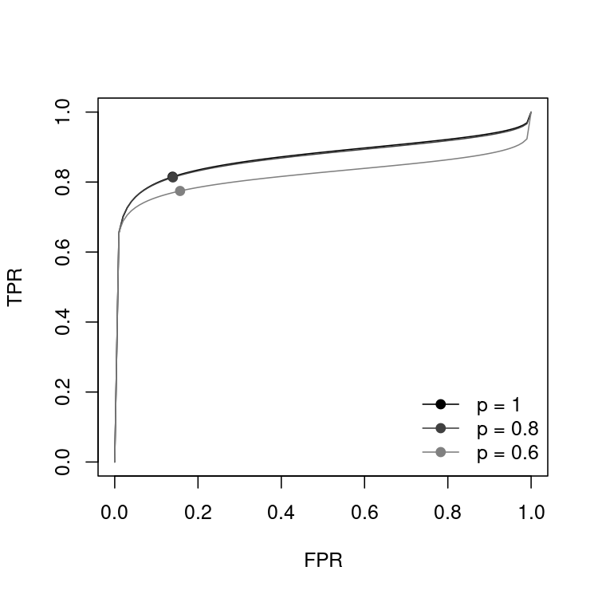

Sensitivity Analysis for Publication Bias on the SROC Curve
DiagProMeta is an R package for the likelihood-based sensitivity analysis for publication bias
The repository is named srocsa, but the package name is DiagProMeta.
The development version can be installed from GitHub:
# install.packages("remotes")
remotes::install_github("kusuri26/srocsa")DiagProMeta requires R (>= 3.5) and imports lifecycle, mixmeta, and numDeriv.
The IVD data (Safdar et al., 2005) contain the 2 x 2 tables (TP, FN, FP, TN) of 33 diagnostic studies.
library(DiagProMeta)
data(IVD)
## sensitivity analysis for the marginal selection probabilities p = 1, 0.8, 0.6
fit <- srocsa.t(TP = TP, FN = FN, TN = TN, FP = FP, data = IVD, sa.p = c(1, 0.8, 0.6))
fitSAUC Estimates
-------------------------------------------
Marginal p SAUC SE CI.low CI.up
-------------------------------------------
p = 1 0.874 0.029 0.806 0.920
p = 0.8 0.871 0.030 0.800 0.919
p = 0.6 0.822 0.041 0.727 0.889(Only the SAUC table is shown. print() also shows the convergence of the optimizer and the parameter estimates with their standard errors.)
## tables of the SAUC and the parameter estimates
res <- summary(fit)
res$sauc
res$coef
## SROC curves and summary points for each p
plot(fit)
p = 1 corresponds to no publication bias. A smaller p assumes that a smaller proportion of the studies is published, and the change of the SROC curve and SAUC shows the potential impact of publication bias.
srocsa.t)
Let and be the logit-transformed sensitivity and specificity of study , and and be their variances. The bivariate random-effects model (Reitsma et al., 2005) is
where has the between-study standard deviations and correlation . The probability of publishing study is modeled by the selection function with
For a given marginal selection probability , is determined such that the mean of the inverse of the marginal selection probabilities of the observed studies equals . The model is fitted by the maximum likelihood method for each in sa.p. is estimated by default, or fixed by the argument c11.
tsrocsa.lrt)
At each time point, the time-dependent sensitivity and specificity, and their within-study variances and covariance, are reconstructed from the survival probabilities of the test-positive and test-negative groups (Combescure et al., 2016). The logit-transformed sensitivity, specificity, and the log hazard ratio (lnHR) are modeled by the trivariate random-effects model, combined with the selection function on the -statistic of lnHR.
Three data frames are required:
| Argument | Content |
|---|---|
data.os |
Survival probabilities of the two groups, one row for each study and each time point |
data.lnhr |
lnHR and its variance, one row for each study |
data.mct |
Survival probabilities at the median follow-up time, used to estimate the censoring distribution |
See ?tsrocsa.lrt for the details of each column.
| Function | Description |
|---|---|
srocsa.t() |
Sensitivity analysis for publication bias on the SROC curve and SAUC |
tsrocsa.lrt() |
Sensitivity analysis for publication bias on the time-dependent SROC curve and SAUC |
sroc() |
Bivariate random-effects model for the SROC curve without publication bias |
tsroc() |
Time-dependent SROC curve without publication bias |
sauc() |
SAUC and its confidence interval (delta method on the logit scale) |
print(), summary(), plot()
|
Methods for the "srocsa" objects returned by srocsa.t(), tsroc(), and tsrocsa.lrt()
|
| Data | Description |
|---|---|
IVD |
Meta-analysis of the diagnosis of intravascular device-related bloodstream infection (33 studies) |
CD64 |
Meta-analysis of neutrophil CD64 for the diagnosis of bacterial infection (27 studies) |
IVD_2, CD64_2
|
Logit-transformed sensitivity and specificity of IVD and CD64, with their variances |
Example data for the time-dependent analysis are not yet included in the package.